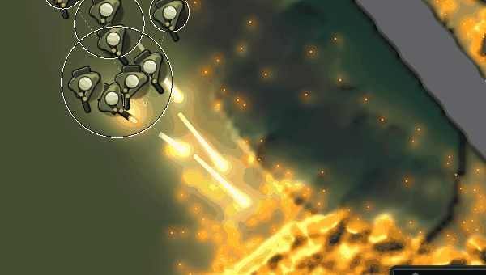
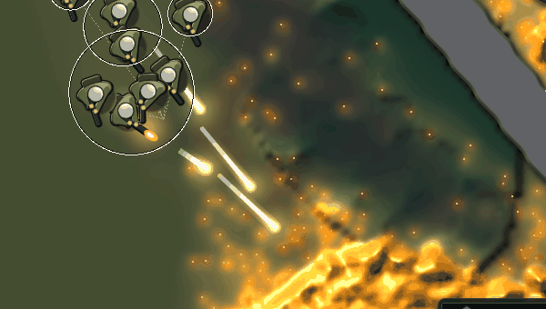
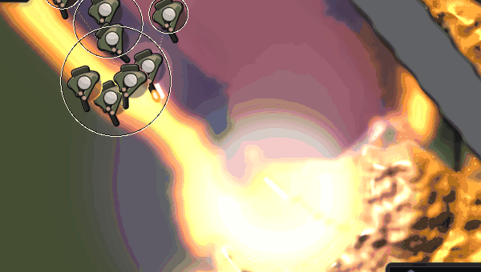
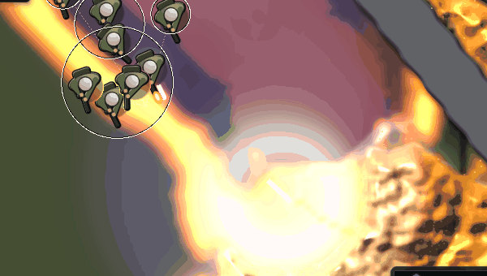
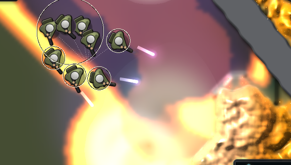
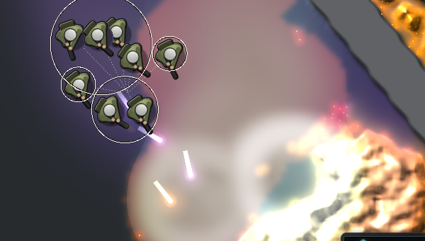

<title>Calmer Hits</title>
<meta name="claude:viewport-fit-sides" content="cover">
<link rel="stylesheet" href="https://fonts.googleapis.com/css2?family=Space+Grotesk:wght@500;700&family=Inter:wght@400;600&display=swap">
<style>
/* Layout: one column; each pair of films side by side (stacking on a phone), then the fire note. */
:root { --bg:#f2f3ef; --fg:#1c2023; --muted:#5b6366; --panel:#ffffff; --line:#d7d9d1; --accent:#5d7f3a;
  --display:"Space Grotesk",system-ui,sans-serif; --body:"Inter",system-ui,sans-serif; }
@media (prefers-color-scheme: dark) { :root:not([data-theme="light"]) { --bg:#121516; --fg:#e6e9e5; --muted:#99a2a2; --panel:#1a1e20; --line:#2b3134; --accent:#a3c97a; color-scheme:dark } }
:root[data-theme="dark"] { --bg:#121516; --fg:#e6e9e5; --muted:#99a2a2; --panel:#1a1e20; --line:#2b3134; --accent:#a3c97a; color-scheme:dark }
body { background:var(--bg); color:var(--fg); font-family:var(--body); line-height:1.55; }
main { max-width:960px; margin:0 auto; padding-block:32px 48px; padding-left:max(16px, env(safe-area-inset-left, 0px)); padding-right:max(16px, env(safe-area-inset-right, 0px)); display:grid; gap:28px; }
h1, h2 { font-family:var(--display); text-wrap:balance; margin:0; }
h1 { font-size:2rem; } h2 { font-size:1.25rem; }
p { margin:0; max-width:65ch; }
.muted { color:var(--muted); }
section { display:grid; gap:12px; min-width:0; }
.pair { display:grid; grid-template-columns:repeat(auto-fit, minmax(300px, 1fr)); gap:12px; }
figure { margin:0; background:var(--panel); border:1px solid var(--line); border-radius:6px; overflow:hidden; }
figure img { display:block; width:100%; }
figcaption { padding:10px 14px; display:flex; flex-wrap:wrap; gap:6px 14px; align-items:baseline; }
.tag { font-family:var(--display); font-weight:700; color:var(--accent); }
.note { color:var(--muted); }
</style>
<main>
  <header style="display:grid;gap:8px">
    <h1>Calmer Hits</h1>
    <p class="muted">Larder World, 14 November. You said each bullet's hit sent a huge wave out. There were two causes. Each bullet carried a light that reached 7 cells, so a piercing bullet swept a bright disc 14 cells wide across the slime. And blasts now set the new plants on fire. The lights are now a quarter of their old size. The fire belongs to the plants thread, which has your note.</p>
  </header>

  <section>
    <h2>Sniper (range, range, pierce)</h2>
    <div class="pair">
      <figure><figcaption><span class="tag">Before</span><span class="note">bullet light 7 cells, muzzle 5, hit 4</span></figcaption></figure>
      <figure><figcaption><span class="tag">After</span><span class="note">bullet, muzzle and hit 2.5 cells, dimmer</span></figcaption></figure>
    </div>
  </section>

  <section>
    <h2>Gas and blast in turn (lull)</h2>
    <div class="pair">
      <figure><figcaption><span class="tag">Before</span><span class="note">a burst lit 3 radii</span></figcaption></figure>
      <figure><figcaption><span class="tag">After</span><span class="note">a burst lights 1.5 radii; the orange band is fire in the plants</span></figcaption></figure>
    </div>
  </section>

  <section>
    <h2>The fire</h2>
    <div class="pair">
      <figure><figcaption><span class="tag">Plants on (default)</span><span class="note">0:18, each blast lights a ring of plants</span></figcaption></figure>
      <figure><figcaption><span class="tag">plants=0</span><span class="note">0:18, the same round, no fire</span></figcaption></figure>
    </div>
    <p class="note">Plants arrived at 19:40Z. Every blast lights the plants in a ring two cells past its crater. With no recharge, every other shot from a blast round is a blast, so the fire keeps spreading. I've asked the plants thread to tune how blasts light plants.</p>
  </section>

  <p class="muted">Fork map, seed 1, eight soldiers holding from 0:17.5 to 0:18.7 at zoom 7, on the cloud's software GPU. The game itself is unchanged; only these lights are smaller and dimmer.</p>
</main>
